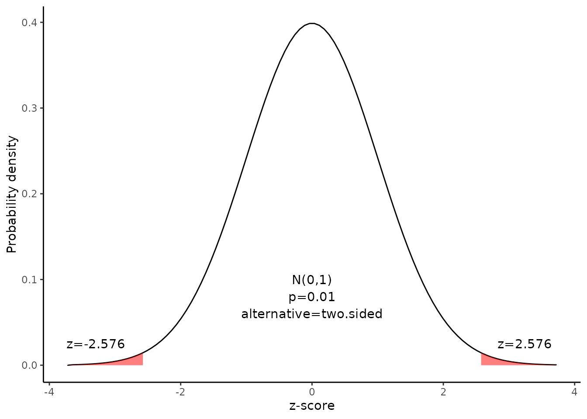

Confidence interval for a proportion
Source:vignettes/Confidence_interval_for_a_proportion.Rmd
Confidence_interval_for_a_proportion.RmdThis document is prepared automatically using the following R command.
library(interpretCI) |
Problem
A major metropolitan newspaper selected a simple random sample of 1600 readers from their list of 160000 subscribers. They asked whether the paper should increase its coverage of local news. 40 % of the sample wanted more local news. What is the 99% confidence interval for the proportion of readers who would like more coverage of local news? |
Confidence interval of a sample proportion
The approach that we used to solve this problem is valid when the following conditions are met.
The sampling method must be simple random sampling. This condition is satisfied; the problem statement says that we used simple random sampling.
The sample should include at least 10 successes and 10 failures. Suppose we classify a “more local news” response as a success, and any other response as a failure. Then, we have 0.4 \(\times\) 1600 = 640 successes, and 0.6 \(\times\) 1600 = 960 failures - plenty of successes and failures.
If the population size is much larger than the sample size, we can use an approximate formula for the standard deviation or the standard error. This condition is satisfied, so we will use one of the simpler approximate formulas.
Solution
Since the above requirements are satisfied, we can use the following four-step approach to construct a confidence interval.
1. Identify a sample statistic.
Since we are trying to estimate a population proportion, we choose the sample proportion (0.4) as the sample statistic.
2. Select a confidence level.
In this analysis, the confidence level is defined for us in the problem. We are working with a 99% confidence level.
3. Find the margin of error.
Find standard deviation or standard error.
Since we do not know the population proportion, we cannot compute the standard deviation; instead, we compute the standard error. And since the population is more than 20 times larger than the sample, we can use the following formula to compute the standard error (SE) of the proportion:
Since we do not know the standard deviation of the population, we cannot compute the standard deviation of the sample mean; instead, we compute the standard error (SE). Because the sample size is much smaller than the population size, we can use the “approximate” formula for the standard error.
\[ SE= \sqrt{\frac{p(1-p)}{n}}\] where \(p\) is the sample proportion, \(n\) is the sample size.
\[SE=\sqrt{\frac{0.4(1-0.4)}{1600}}=0.012\]
Find the critical probability(p*):
\[p*=1-\alpha/2=1-0.01/2=0.995\]
The degree of freedom(df) is: \[df=n-1=1600-1=1599\]
The critical value is the z statistic having a cumulative probability equal to 0.995.
We can get the critical value using the following R code.
\[qnorm(p)=qnorm(0.995)=2.576\]
Alternatively, we find that the critical value is 2.576 from the z Distribution table.
alpha |
0.400 |
0.250 |
0.100 |
0.050 |
0.025 |
0.010 |
0.005 |
0.001 |
z |
-0.253 |
-0.674 |
-1.282 |
-1.645 |
-1.960 |
-2.326 |
-2.576 |
-3.090 |
The graph shows the \(\alpha\) values are the tail areas of the distribution.

Compute margin of error(ME):
\[ME=critical\ value \times SE\] \[ME=2.576 \times 0.012=0.032\]
Specify the confidence interval. The range of the confidence interval is defined by the sample statistic \(\pm\)margin of error. And the uncertainty is denoted by the confidence level.
4. Confidence interval of the proportion
Therefore, the 99% confidence interval is 0.37 to 0.43. That is, we are 99% confident that the true proportion is in the range 0.37 to 0.43.
Result of propCI()
$data
[38;5;246m# A tibble: 1 × 1
[39m
value
[3m
[38;5;246m<lgl>
[39m
[23m
[38;5;250m1
[39m
[31mNA
[39m
$result
alpha n df p P se critical ME lower upper
1 0.01 1600 1599 0.4 0 0.01224745 2.575829 0.03154734 0.3684527 0.4315473
CI z pvalue alternative
1 0.40 [99CI 0.37; 0.43] 32.65986 5.804914e-234 two.sided
$call
propCI(n = 1600, p = 0.4, alpha = 0.01)
attr(,"measure")
[1] "prop"Reference
The contents of this document are modified from StatTrek.com. Berman H.B., “AP Statistics Tutorial”, [online] Available at: https://stattrek.com/estimation/confidence-interval-proportion.aspx?tutorial=AP URL[Accessed Data: 1/23/2022].